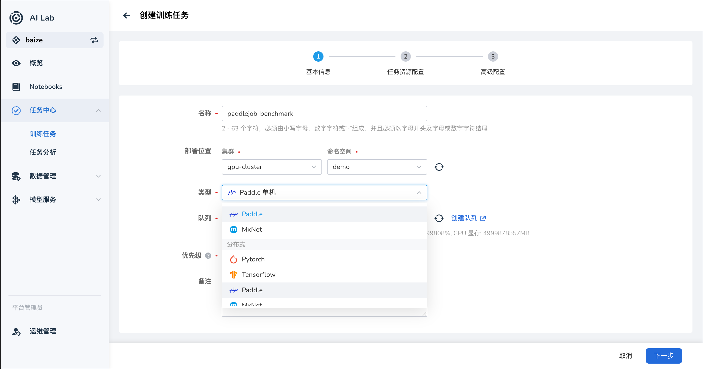

PaddlePaddle 任务¶
PaddlePaddle（飞桨）是百度开源的深度学习平台，支持丰富的神经网络模型和分布式训练方式。PaddlePaddle 任务可以通过单机或分布式模式进行训练。在 AI Lab 平台中，我们提供了对 PaddlePaddle 任务的支持，您可以通过界面化操作，快速创建 PaddlePaddle 任务，进行模型训练。
本教程将指导您如何在 AI Lab 平台上创建和运行 PaddlePaddle 的单机和分布式任务。
任务配置介绍¶
- 任务类型：
PaddlePaddle，支持单机和分布式两种模式。 - 运行环境：选择包含 PaddlePaddle 框架的镜像，或在任务中安装必要的依赖。
任务运行环境¶
我们使用 registry.baidubce.com/paddlepaddle/paddle:2.4.0rc0-cpu 镜像作为任务的基础运行环境。该镜像预装了 PaddlePaddle 框架，适用于 CPU 计算。如果需要使用 GPU，请选择对应的 GPU 版本镜像。
注意：了解如何创建和管理环境，请参考 环境列表。
创建 PaddlePaddle 任务¶

PaddlePaddle 单机训练任务¶
创建步骤¶
- 登录平台：登录 AI Lab 平台，点击左侧导航栏中的 任务中心，进入 训练任务 页面。
- 创建任务：点击右上角的 创建 按钮，进入任务创建页面。
- 选择任务类型：在弹出的窗口中，选择任务类型为
PaddlePaddle，然后点击 下一步。 - 填写任务信息：填写任务名称和描述，例如 “PaddlePaddle 单机训练任务”，然后点击 确定。
- 配置任务参数：根据您的需求，配置任务的运行参数、镜像、资源等信息。
运行参数¶
- 启动命令：
python -
命令参数：
说明：
-m paddle.distributed.launch：使用 PaddlePaddle 提供的分布式启动模块，即使在单机模式下也可以使用，方便将来迁移到分布式。run_check：PaddlePaddle 提供的测试脚本，用于检查分布式环境是否正常。
资源配置¶
- 副本数：1（单机任务）
- 资源请求：
- CPU：根据需求设置，建议至少 1 核
- 内存：根据需求设置，建议至少 2 GiB
- GPU：如果需要使用 GPU，选择 GPU 版本的镜像，并分配相应的 GPU 资源
完整的 PaddleJob 配置示例¶
以下是单机 PaddleJob 的 YAML 配置：
apiVersion: kubeflow.org/v1
kind: PaddleJob
metadata:
name: paddle-simple-cpu
namespace: kubeflow
spec:
paddleReplicaSpecs:
Worker:
replicas: 1
restartPolicy: OnFailure
template:
spec:
containers:
- name: paddle
image: registry.baidubce.com/paddlepaddle/paddle:2.4.0rc0-cpu
command:
[
'python',
'-m',
'paddle.distributed.launch',
'run_check',
]
配置解析：
apiVersion和kind：指定资源的 API 版本和类型，这里是PaddleJob。metadata：元数据，包括任务名称和命名空间。spec：任务的详细配置。paddleReplicaSpecs：PaddlePaddle 任务的副本配置。Worker：指定工作节点的配置。replicas：副本数，这里为 1，表示单机训练。restartPolicy：重启策略，设为OnFailure，表示任务失败时自动重启。template：Pod 模板，定义容器的运行环境和资源。containers：容器列表。name：容器名称。image：使用的镜像。command：启动命令和参数。
提交任务¶
配置完成后，点击 提交 按钮，开始运行 PaddlePaddle 单机任务。
查看运行结果¶
任务提交成功后，您可以进入 任务详情 页面，查看资源的使用情况和任务的运行状态。从右上角进入 工作负载详情，可以查看运行过程中的日志输出。
示例输出：
这表示 PaddlePaddle 单机任务成功运行，环境配置正常。
PaddlePaddle 分布式训练任务¶
在分布式模式下，PaddlePaddle 任务可以使用多台计算节点共同完成训练，提高训练效率。
创建步骤¶
- 登录平台：同上。
- 创建任务：点击右上角的 创建 按钮，进入任务创建页面。
- 选择任务类型：选择任务类型为
PaddlePaddle，然后点击 下一步。 - 填写任务信息：填写任务名称和描述，例如 “PaddlePaddle 分布式训练任务”，然后点击 确定。
- 配置任务参数：根据需求，配置运行参数、镜像、资源等。
运行参数¶
- 启动命令：
python -
命令参数：
说明：
-m paddle.distributed.launch：使用 PaddlePaddle 提供的分布式启动模块。train.py：您的训练脚本，需要放在镜像中或挂载到容器内。--epochs=10：训练的轮数，这里设置为 10。
资源配置¶
- 任务副本数：根据
Worker副本数设置，这里为 2。 - 资源请求：
- CPU：根据需求设置，建议至少 1 核
- 内存：根据需求设置，建议至少 2 GiB
- GPU：如果需要使用 GPU，选择 GPU 版本的镜像，并分配相应的 GPU 资源
完整的 PaddleJob 配置示例¶
以下是分布式 PaddleJob 的 YAML 配置：
apiVersion: kubeflow.org/v1
kind: PaddleJob
metadata:
name: paddle-distributed-job
namespace: kubeflow
spec:
paddleReplicaSpecs:
Worker:
replicas: 2
restartPolicy: OnFailure
template:
spec:
containers:
- name: paddle
image: registry.baidubce.com/paddlepaddle/paddle:2.4.0rc0-cpu
command:
[
'python',
'-m',
'paddle.distributed.launch',
'train.py',
]
args:
- '--epochs=10'
配置解析：
Worker：replicas：副本数，设置为 2，表示使用 2 个工作节点进行分布式训练。- 其他配置与单机模式类似。
设置任务副本数¶
在创建 PaddlePaddle 分布式任务时，需要根据 paddleReplicaSpecs 中配置的副本数，正确设置 任务副本数。
- 总副本数 =
Worker副本数 - 本示例中：
Worker副本数：2- 总副本数：2
因此，在任务配置中，需要将 任务副本数 设置为 2。
提交任务¶
配置完成后，点击 提交 按钮，开始运行 PaddlePaddle 分布式任务。
查看运行结果¶
进入 任务详情 页面，查看任务的运行状态和资源使用情况。您可以查看每个工作节点的日志输出，确认分布式训练是否正常运行。
示例输出：
Worker 0: Epoch 1, Batch 100, Loss 0.5
Worker 1: Epoch 1, Batch 100, Loss 0.6
...
Training completed.
这表示 PaddlePaddle 分布式任务成功运行，模型训练完成。
小结¶
通过本教程，您学习了如何在 AI Lab 平台上创建和运行 PaddlePaddle 的单机和分布式任务。我们详细介绍了 PaddleJob 的配置方式，以及如何在任务中指定运行的命令和资源需求。希望本教程对您有所帮助，如有任何问题，请参考平台提供的其他文档或联系技术支持。
附录¶
-
注意事项：
- 训练脚本：确保
train.py（或其他训练脚本）在容器内存在。您可以通过自定义镜像、挂载持久化存储等方式将脚本放入容器。 - 镜像选择：根据您的需求选择合适的镜像，例如使用 GPU 时选择
paddle:2.4.0rc0-gpu等。 - 参数调整：可以通过修改
command和args来传递不同的训练参数。
- 训练脚本：确保
-
参考文档：